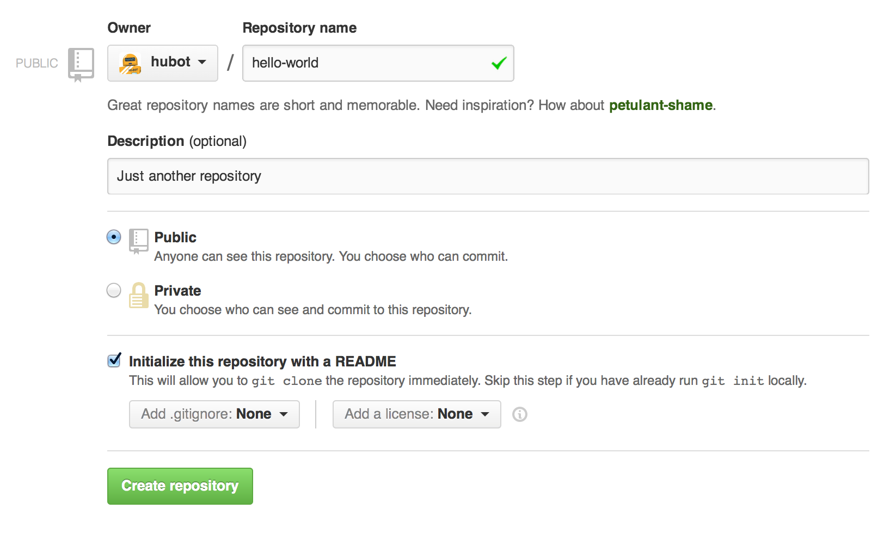
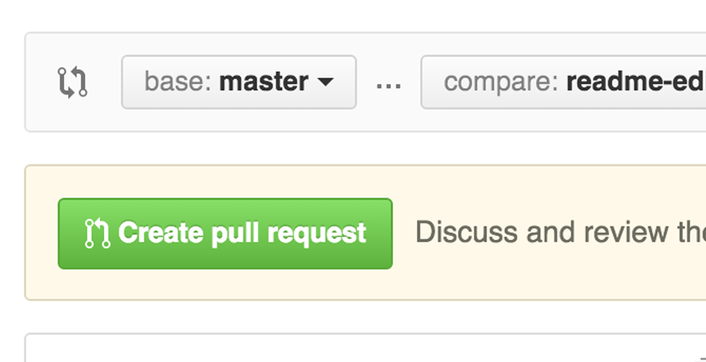

Hello WorldHello World
The Hello World project is a time-honored tradition in computer programming. 你好世界在计算机编程项目是一个悠久的传统。It is a simple exercise that gets you started when learning something new. 这是一个简单的练习,让你开始学习新的东西。Let’s get started with GitHub!让我们开始使用GitHub !
You’ll learn how to:您将学习如何:
- Create and use a repository创建和使用一个存储库中
- Start and manage a new branch启动和管理一个新分支
- Make changes to a file and push them to GitHub as commits修改一个文件,推动他们GitHub提交
- Open and merge a pull request开放和合并提取请求
What is GitHub?GitHub是什么?
GitHub is a code hosting platform for version control and collaboration. GitHub托管是一个代码版本控制和协作的平台。It lets you and others work together on projects from anywhere.它让你从任何地方和其他项目一起工作。
This tutorial teaches you GitHub essentials like repositories, branches, commits, and Pull Requests. 本教程教你GitHub库等必需品,分支机构,提交,请求。You’ll create your own Hello World repository and learn GitHub’s Pull Request workflow, a popular way to create and review code.您将创建你自己的Hello World库和学习GitHub的拉请求工作流,一个受欢迎的方式来创建和评审代码。
No coding necessary没有必要的编码
To complete this tutorial, you need a要完成本教程,您需要一个GitHub.com accountGitHub.com帐户and Internet access. 和互联网接入。You don’t need to know how to code, use the command line, or install Git (the version control software GitHub is built on).你不需要知道如何代码,使用命令行,或安装Git(GitHub的版本控制软件是建立在)。
Tip:提示:Open this guide in a separate browser window (or tab) so you can see it while you complete the steps in the tutorial.打开这个指南将在一个单独的浏览器窗口(或标签),这样你就可以看到它当你完成本教程中的步骤。
Step 1. 步骤1。Create a Repository创建一个存储库
A repository is usually used to organize a single project. 存储库通常是用来组织一个项目。Repositories can contain folders and files, images, videos, spreadsheets, and data sets – anything your project needs. 存储库可以包含文件夹和文件、图片、视频、电子表格和数据集——任何您的项目需求。We recommend including a README, or a file with information about your project. 我们建议包括自述文件,或文件与您的项目的信息。GitHub makes it easy to add one at the same time you create your new repository.GitHub很容易添加一个在同一时间你创建新存储库。It also offers other common options such as a license file.它还提供了其他常见的选项,例如一个许可证文件。
Your你的 hello-worldrepository can be a place where you store ideas, resources, or even share and discuss things with others.存储库可以是一个地方的想法,资源,甚至与他人分享和讨论事情。
To create a new repository创建一个新的存储库
- In the upper right corner, next to your avatar or identicon, click在右上角,你的《阿凡达》或identicon旁边,点击and then select New repository.然后选择新的存储库。
- Name your repository存储库名称
hello-world. - Write a short description.写一个简短的描述。
- Select Initialize this repository with a README.选择初始化这个库README。

Click Create repository.点击创建存储库。
Step 2. 步骤2。Create a Branch创建一个分支
Branching is the way to work on different versions of a repository at one time.分支是不同版本的存储库的工作方式。
By default your repository has one branch named默认存储库已命名的一个分支 masterwhich is considered to be the definitive branch. 这被认为是决定性的分支。We use branches to experiment and make edits before committing them to我们用树枝来实验并进行编辑之前 master.
When you create a branch off the当您创建了一个分支 masterbranch, you’re making a copy, or snapshot, of分支,你复制,或快照的 masteras it was at that point in time. 在那个时间点上。If someone else made changes to the如果别人做了更改 masterbranch while you were working on your branch, you could pull in those updates.分公司当你正在你的分公司,你可以把这些更新。
This diagram shows:这个图表显示:
- The的
masterbranch分支 - A new branch called一个新的分支叫做
feature(because we’re doing ‘feature work’ on this branch)(因为我们做“工作特性”在这个分支) - The journey that的旅程
featuretakes before it’s merged into需要合并成之前master

Have you ever saved different versions of a file? 你有没有保存不同版本的文件?Something like:喜欢的东西:
story.txtstory-joe-edit.txtstory-joe-edit-reviewed.txt
Branches accomplish similar goals in GitHub repositories.树枝在GitHub库实现类似的目标。
Here at GitHub, our developers, writers, and designers use branches for keeping bug fixes and feature work separate from our在GitHub,我们的开发人员、作家和设计师使用树枝让bug修复和功能独立于我们的工作 master(production) branch. (生���)的分支。When a change is ready, they merge their branch into当一个变化是准备好了,他们合并分支 master.
To create a new branch创建一个新的分支
- Go to your new repository去你的新存储库
hello-world. - Click the drop down at the top of the file list that says branch: master.点击下拉顶部的文件列表,分支说:主人。
- Type a branch name,类型一个分支的名字,
readme-edits, into the new branch text box.文本框,进入新的分支。 - Select the blue Create branch box or hit “Enter” on your keyboard.选择蓝色创建分支箱或点击“输入”在你的键盘。

Now you have two branches,现在你有两个分支, masterand和 readme-edits. 。They look exactly the same, but not for long! 他们看起来完全相同,但不会太久!Next we’ll add our changes to the new branch.接下来,我们将添加我们更改新的分支。
Step 3. 步骤3。Make and commit changes制作和提交修改
Bravo! 万岁!Now, you’re on the code view for your现在,你在你的代码视图 readme-editsbranch, which is a copy of的分支,它是一个副本 master. 。Let’s make some edits.让我们做一些编辑。
On GitHub, saved changes are called commits. 在GitHub,保存更改被称为提交。Each commit has an associated commit message, which is a description explaining why a particular change was made. 每个提交都有一个关联的提交消息,这是一个描述解释为什么一个特定的更改。Commit messages capture the history of your changes, so other contributors can understand what you’ve done and why.提交信息捕获您的更改的历史,所以其他贡献者可以理解你做了什么,为什么。
Make and commit changes制作和提交修改
- Click the单击
README.mdfile.文件。 - Click the单击pencil icon in the upper right corner of the file view to edit.铅笔图标右上角的编辑文件的视图。
- In the editor, write a bit about yourself.在编辑器中,写一点关于你自己的情况。
- Write a commit message that describes your changes.写一个提交消息描述您的更改。
- Click Commit changes button.点击提交修改按钮。

These changes will be made to just the README file on your这些变化将的README文件 readme-editsbranch, so now this branch contains content that’s different from分支,所以现在这个分支包含不同的内容 master.
Step 4. 步骤4。Open a Pull Request打开一个拉请求
Nice edits! 漂亮的编辑!Now that you have changes in a branch off of现在您已经变化的一个分支 master, you can open a pull request.,您可以打开一个请求。
Pull Requests are the heart of collaboration on GitHub. 把请求GitHub的合作的核心。When you open a pull request, you’re proposing your changes and requesting that someone review and pull in your contribution and merge them into their branch. 当您打开一个请求,你提议的变化和要求别人审查和拉在你的贡献并将它们合并到他们的分支。Pull requests show diffs, or differences, of the content from both branches. 把请求差别,或差异,从两个分支的内容。The changes, additions, and subtractions are shown in green and red.修改、添加和删除工作绿色和红色所示。
As soon as you make a commit, you can open a pull request and start a discussion, even before the code is finished.一旦你做出承诺,你可以打���一个请求并开始讨论,之前完成的代码。
By using GitHub’s通过使用GitHub的@mention system@mention系统in your pull request message, you can ask for feedback from specific people or teams, whether they’re down the hall or 10 time zones away.将请求消息,你可以要求反馈具体的人或团队,无论是大厅或10时区。
You can even open pull requests in your own repository and merge them yourself. 你甚至可以打开拉在自己的存储库,并将它们合并自己的请求。It’s a great way to learn the GitHub Flow before working on larger projects.这是一个很好的方法来学习GitHub流之前致力于更大的项目。
Open a Pull Request for changes to the README打开一个更改请求README
Click on the image for a larger version点击图片查看大图
| Step一步 | Screenshot截图 |
|---|---|
| Click the单击Pull Request tab, then from the Pull Request page, click the green New pull request button.把请求选项卡,然后从拉请求页面,点击绿色新拉请求按钮。 |  |
Select the branch you made,选择的分支, readme-edits, to compare with,比较 master(the original).(原件)。 |  |
| Look over your changes in the diffs on the Compare page, make sure they’re what you want to submit.查看您的更改在差别比较页面,确保他们你想提交。 |  |
| When you’re satisfied that these are the changes you want to submit, click the big green Create Pull Request button.当你满意,这些变化你想提交,点击绿色创建拉请求按钮。 |  |
| Give your pull request a title and write a brief description of your changes.给你把请求一个标题和写一个简短的描述您的更改。 |  |
When you’re done with your message, click Create pull request!当你完成你的信息,请点击创建拉请求!
Tip: You can use提示:您可以使用emojiemojiand和drag and drop images and gifs拖拽图片和gifonto comments and Pull Requests.在评论和拉请求。
Step 5. 第5步。Merge your Pull Request合并将请求
In this final step, it’s time to bring your changes together – merging your在这最后一步,是时候把你的合并在一起,你的变化 readme-editsbranch into the分支到 masterbranch.分支。
- Click the green Merge pull request button to merge the changes into单击绿色拉请求按钮将更改合并到合并
master. - Click Confirm merge.点击确认合并。
- Go ahead and delete the branch, since its changes have been incorporated, with the Delete branch button in the purple box.继续删除分支,变化合并以来,按钮在紫色框删除分支。


Celebrate!庆祝!
By completing this tutorial, you’ve learned to create a project and make a pull request on GitHub!通过完成本教程之后,您已经学会了创建一个项目,在GitHub拉请求!


Here’s what you accomplished in this tutorial:这是你在本教程完成:
- Created an open source repository创建一个开源的库
- Started and managed a new branch开始和管理一个新分支
- Changed a file and committed those changes to GitHub改变了文件并提交这些更改到GitHub
- Opened and merged a Pull Request开了,合并提取请求
Take a look at your GitHub profile and you’ll see your new看看你的GitHub概要文件,你会看到你的新contribution squares贡献广场!
If you want to learn more about the power of Pull Requests, we recommend reading the如果你想了解更多的力量拉请求,我们建议阅读GitHub Flow GuideGitHub流导. 。You might also visit你也可以访问GitHub ExploreGitHub探索and get involved in an Open Source project和参与一个开源项目
Tip: Check out our other提示:查看我们的其他信息Guides指南and和YouTube ChannelYouTube频道for more GitHub how-tos.GitHub教程。
Last updated April 7, 2016上次更新2016年4月7日